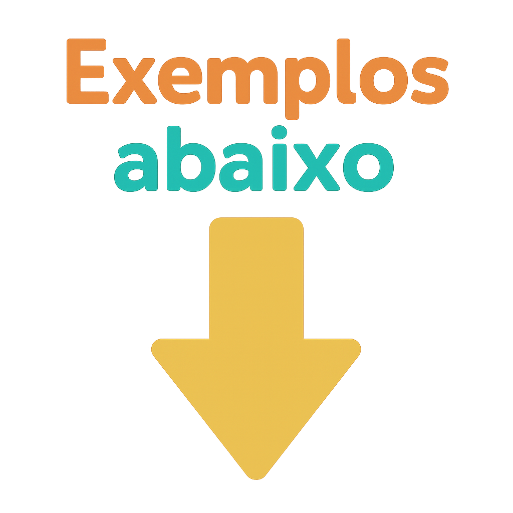

Recapitulando o exercicio da aula anterior, temos alguns tipos de seletores:
Agora vamos ver pseudo-classe, que seria o ":" na frente do seletor. Exemplo:
há varios tipos de pseudo-classes, como :hover, :focus, :active, :visited, entre outros. eles tem que estar relacionados a algum estado do elemento.

Passe o mouse aqui
O seletor a:visited é usado para estilizar links que já foram visitados pelo usuário.
Isso permite diferenciar visualmente os links que o usuário já clicou daqueles que ainda não foram acessados.
usar a pseudo-classe :hover para esconder o texto quando o mouse estiver sobre ele.
e isso é um protótipo simples de como criar um efeito de "revelar" texto ao passar o mouse sobre um elemento. ou seja um menu dropdown simples.
Passe o mouse aqui para ver o texto escondido.
Codigo CSS:
.texto{
text-align: center;
margin-top: 50px;
}
.texto p {
text-align: center;
}
.texto:hover .escondido{
display: block; /* Exibe o elemento */
}
.escondido{
display: none;/* Oculta o elemento */
}